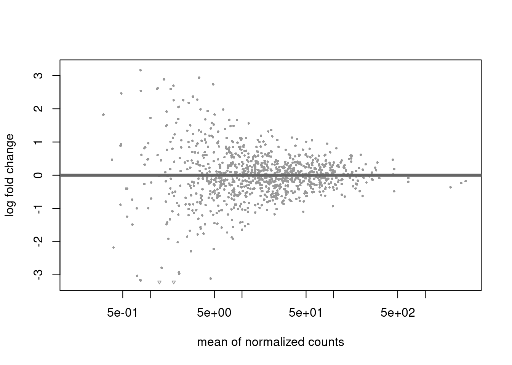

Chapter 2 Bioconductor Package
2.2 Installation of BioConductor package
To install BioConductor run the below command
if (!requireNamespace("BiocManager", quitely=TRUE))
install.packages("BiocManager")
BiocManager::install("ChemmineR")2.3 Importing Data in R
Depending on the type of data file, R has a varying methods to load the data. The below list shows how to load different types of files to the R program.
data <- read_csv("path/to/your/file.csv")for csv filedata <- read_excel("path/to/your/file.xlsx", sheet = "Sheet1")for excel filedata <- fread("path/to/your/file.csv")for large csv files.data <- read_sav("path/to/your/file.sav")for SPSS files.data <- read_dta("path/to/your/file.dta")for stata files.data <- read_sas("path/to/your/file.sas7bdat")for SAS files.
2.4 Writing Script of Code in R
In R, the use can interact directly with the console or prepare a script inform of *.R or *.Rmd (R Markdown) files.
Script are useful as they allow one to;
- easily pick up where they left off on a project and progressively build and refine code and analysis.
- easily reproduce analysis run earlier and documentation. This also saves time on repetetive tasks.
- do a batch processing such that tasks are automotated instead of running them one by one.
- debug the code and find errors line by line.
- version control such as git that tracks the changes and enables collaboration with other developers.
A script is a set of commands that usually includes commenting on what each piece of code intended to do
2.5 Data Interface
Follow the following steps when working with data from external interfaces;
- Refer CSV working file(filepath) e.g
test.csv - Get the current working directory,
getwd() - Set the current working directory
setwd().
2.5.1 Reading the *.csv file
In this section, we will work with two csv files, test.csv and data.csv. Both files are stored in a directory named data. Lets load the data.csv to the program.
The read.csv() function automatically converts the loaded to a data frame. is.data.frame() is used to find if a variable is a data frame
## [1] TRUEThe person_info data set is confirmed to be a variable.
The ncol() function counts the number of columns/variables/features in a data frame
## [1] 6This data frame has 6 columns. Alternatively, the nrow() function counts the number of rows/observations/records.
## [1] 10This data set has 10 rows and 6 columns.
2.5.2 Brief data analysis
When the function, attach() is called to a data frame, the R program can refer to specific column without associating it with the data frame name. In this section the person_info will be attached to R and dive shallow into data analysis.
Calculate the mean of the salary
## [1] 65200The average salary in the data set is 65200. The names() function is called to find the column names of the data set.
## [1] "Name" "Emp.Id" "Gender" "Age" "Smoke" "Salary"Now, lets jump to the protein data which is stored in the test.csv file. The head() function is used to show the first 6 records of the dataset
## SNO DBNAME PROTEIN_NAME NO_DIMER NO_RESIDUES DEPOSITED_DATE
## 1 1 PDB TUBULIN 3 349 05-05-2014
## 2 2 PDB KERATIN 5 450 05-06-2015
## 3 3 UNIPROT HEMOGLOBIN 7 345 05-07-2017
## 4 4 PIR CYTOKINEASE 10 950 05-05-2014
## 5 5 EXPASY PROTEASE 5 493 05-06-2015
## 6 6 ENTREX TUBULIN1 4 760 05-07-2017Count the number of rows and columns in the protein dataset
## [1] 6## [1] 10The data frame has 10 rows and 6 columns. Alternatively, the dim() can be used, it returns the number of rows and columns respectively.
## [1] 10 6Get the protein detail having the most residues and the max residues value.
## [1] 950## SNO DBNAME PROTEIN_NAME NO_DIMER NO_RESIDUES DEPOSITED_DATE
## 4 4 PIR CYTOKINEASE 10 950 05-05-2014The max() function is used to find the maximum value in a vector or column. In this code, max(proteindata$NO_RESIDUES) returns the highest number of residues (NO_RESIDUES) found in the proteindata dataset, and this value is stored in objname1.
The subset() function is used to filter rows in a data frame that meet certain conditions. Here, subset(proteindata, NO_RESIDUES == max(NO_RESIDUES)) returns all rows from the proteindata dataset where the NO_RESIDUES column matches the maximum value, and the result is stored in objname2.
- Get the protein detail having entry in PDB database
## SNO DBNAME PROTEIN_NAME NO_DIMER NO_RESIDUES DEPOSITED_DATE
## 1 1 PDB TUBULIN 3 349 05-05-2014
## 2 2 PDB KERATIN 5 450 05-06-2015
## 7 7 PDB TUBULIN2 3 387 05-05-2014The proteindata dataset is filtered to select rows where the DBNAME column is equal to "PDB". This means it extracts all proteins that are listed in the PDB database. The resulting subset is stored in objname3.
Get the protein detail having more than 3 dimer from PDB database
## [1] SNO DBNAME PROTEIN_NAME NO_DIMER NO_RESIDUES
## [6] DEPOSITED_DATE
## <0 rows> (or 0-length row.names)The subset function is used to filter the proteindata dataset to include only rows where DBNAME is "PDB" and DIMER_COUNT is greater than 3.
The filtered data is stored in objname5
Now that we have the basic concept of how R works, lets introduce the Bioconductor package.
2.6 Introduction to Bioconductor
This open-source project provides tools for analyzing and understanding high-throughput genomic data. It includes a broad selection of packages for both bioinformatics and chemoinformatics. Before we explore the ChemmineR package in depth, let’s start with a few basic concepts.
2.6.1 Exploring Genomic data
The GenomicRanges package is used to work with genomic intervals. It installed by:
BiocManager::install("GenomicRanges")Lets now import the genomic ranges package to the program
GRanges objects represent genomic ranges, allowing you to manipulate genomic intervals and align them with genomic data like gene annotations.
# Create a simple genomic range object
gr <- GRanges(seqnames = "chr1", ranges = IRanges(start = 100, end = 200))
gr## GRanges object with 1 range and 0 metadata columns:
## seqnames ranges strand
## <Rle> <IRanges> <Rle>
## [1] chr1 100-200 *
## -------
## seqinfo: 1 sequence from an unspecified genome; no seqlengths2.6.2 Visualizing Gene Expression Data
The DESeq2 package is used to find the differential gene expression analysis. It is widely used to identify genes that are differentially expressed under different conditions. Its is installed by;
BiocManager::install("DESeq2")Load the library
DESeq2 handles RNA-Seq data to model and estimate the expression levels of genes, providing statistical tools for identifying differentially expressed genes.
## estimating size factors## estimating dispersions## gene-wise dispersion estimates## mean-dispersion relationship## final dispersion estimates## fitting model and testing
2.6.3 Annotating Genomic Data
The AnnotationDbi and org.Hs.eg.db packages are used to annotate gene identifiers with gene names, descriptions and other relevant metadata. The packages can be installed by;
BiocManager::install("org.Hs.eg.db")Load the org.Hs.eg.db library.
The packages provide a framework for mapping and retrieving biological data from databases. It’s crucial for adding biological context to your data, such as converting gene IDs to gene names
# Example: Map Entrez IDs to gene symbols
gene_ids <- c("1", "2", "3")
symbols <- mapIds(org.Hs.eg.db, keys = gene_ids, column = "SYMBOL", keytype = "ENTREZID")## 'select()' returned 1:1 mapping between keys and columns## 1 2 3
## "A1BG" "A2M" "A2MP1"2.6.4 Working with Sequence Data
The popular `BioStrings package is used to analyze the protein, RNA and DNA sequences. The library is installed as the ones before.
BiocManager::install("Biostrings")Load the library
Lets manipulate the DNA String "ATCGGCTA" by reverse complimenting.
## 8-letter DNAString object
## seq: TAGCCGATThis Bioconductor is an essential toolkit for anyone working with genomic data. Its packages are designed to facilitate a wide range of bioinformatics tasks, from basic sequence manipulation to complex statistical analyses.